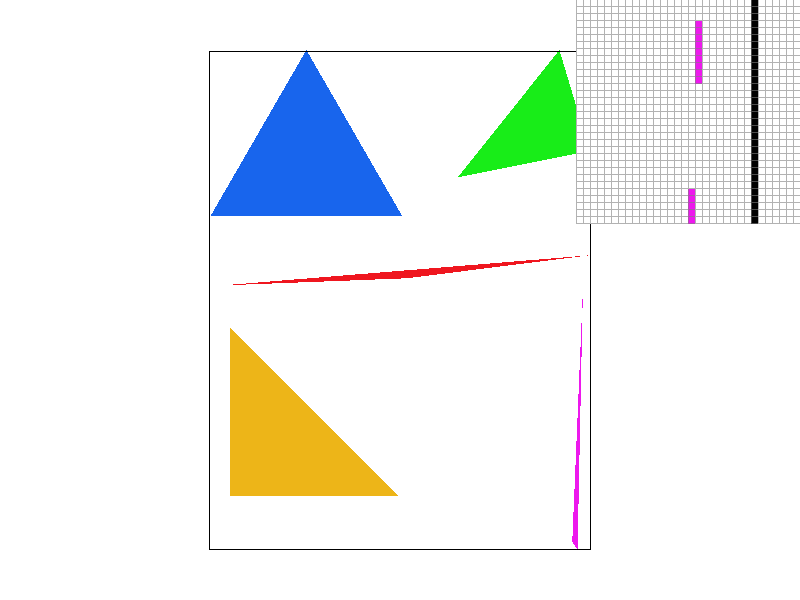
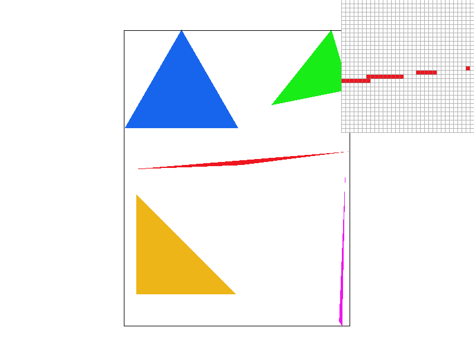
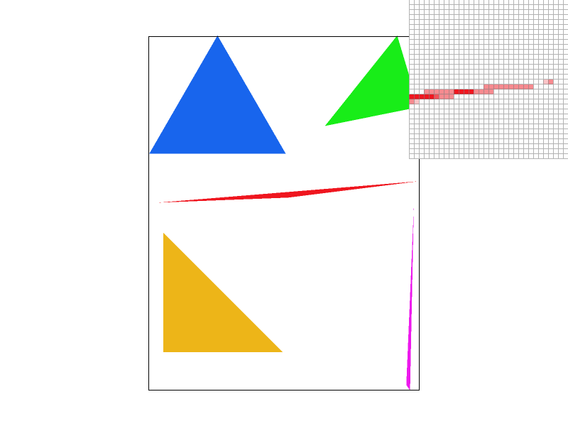
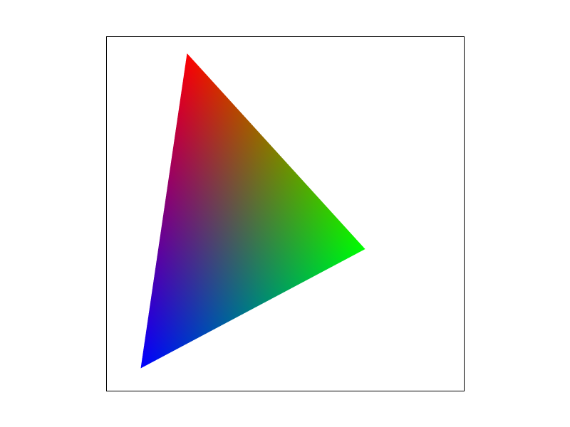
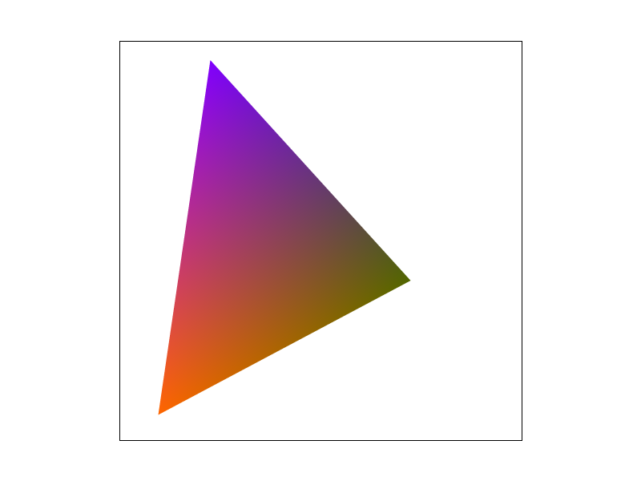
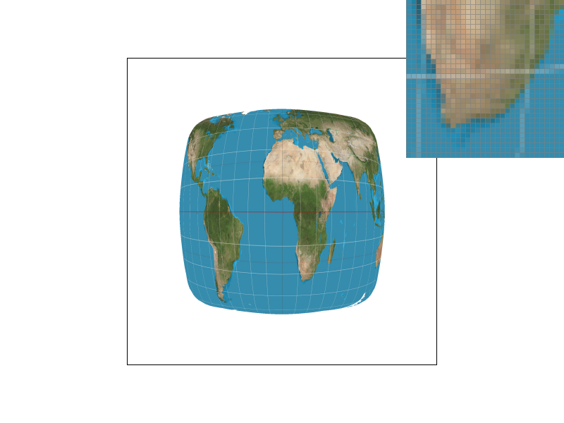
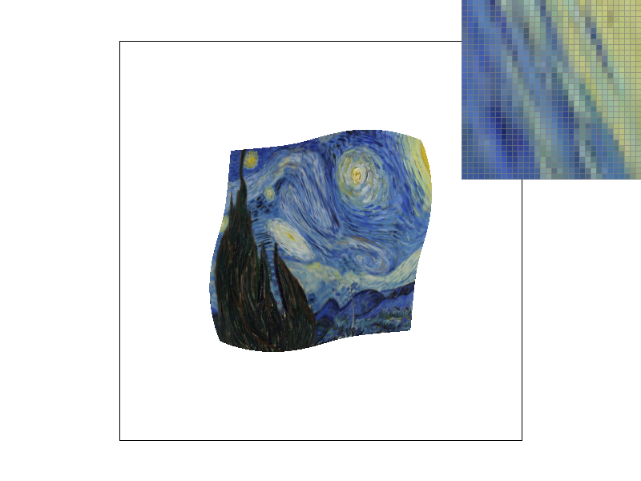

CS184/284A Spring 2025 Homework 1 Write-Up
Link to webpage: (TODO) cs184.eecs.berkeley.edu/sp25
Link to GitHub repository: https://github.com/cal-cs184-student/sp25-hw1-akm
Overview
In this homework, I implemented a simple image rasterizer that supports the affine transforms and the antialiasing methods of supersampling, pixel sampling, and level sampling. My program can take a Scalable Vector Graphic (SVG) file and draw it in its GUI. While working on this assignment, I thought a lot about how all of the math behind the graphics worked in a geometric sense so that I wasn't just coding the equations in lecture without understanding why they would work. I feel like this helped me solidify these concepts introduced during lecture. The most challenging part of this assignment was implementing the level sampling because I initially had struggled with the math behind mapping the textures.
Task 1: Drawing Single-Color Triangles
In this task I implemented a simple rasterizer that works by checking if the center of a pixel is within the bounds of the three points given to define a triangles' vertices. The result is that the rasterizer can draw and color in any triangle given three points. Prior to implementing this function, I didn't understand why we needed a consistent winding order for the triangle vertices. As I drew out examples to check my understanding, I figured out that it needed to be consistent to ensure the half planes that make up the triangle intersect properly.
For this task, I start by checking the winding order of the triangle's points by calculating the cross product of the edges P0P1 and P1P2 to get the z-component. If this z value is less than zero, it shows that the winding order is clockwise. As needed, I switch the second and third given triangle vertices to make the winding order counterclockwise. Afterwards, I calculate the bounding box of the triangle by looking for the floors and ceilings of the lowest and highest x- and y-values out of the triangle vertices. Then, I use two for loops to iterate through every pixel in the bounding box and check whether the center of that pixel is inside the triangle. I wrote a helper function to calculate whether the point I'm checking is on the right side of the line with the line test equation provided during Lecture 2. If the center of the pixel passes this test for all three edges of the triangle, I fill the pixel in with the given color.
My algorithm only checks the pixels that are within the bounding box so there isn't any work being wasted checking points where the triangle couldn't possibly be. I calculate this box by getting the minimum and maximum x- and y-values from the given vertices. Then I call floor() on the minimum values and ceiling() on the maximum values to ensure floats will be included when we get nearest integers that define the pixel boudnaries.
Test Image 4

|

|
Task 2: Antialiasing by Supersampling
For this task, I built up my algorithm from Task 1 to support pixel supersampling at sample rates 1, 4, 9, and 16. Supersampling is useful to help smooth out the edges of images that don't fit neatly into one pixel or don't cross the center of the pixel where we sample. When parts of a triangle fall between pixels, we risk losing parts of the image, but supersampling allows us to get intermediary values at those points instead of losing them entirely. It also allows for smoother transitions between different colors instead of sharp jaggies.
Within my existing for loops, I added an additional two for loops to iterate over the subpixels within the main pixel. I use the same line test helper function I wrote for Task 1 to check if the subpixel lies within the triangle, but this time I apply the color to my sample buffer, instead of the actual framebuffer directly, if it passes the three-line test. I resized the sample buffer to have enough space to store the color values of every subpixel. After iterating through every subpixel, I calculate the average color of each real pixel out of its corresponding subpixels in resolve_to_framebuffer() to draw on the real framebuffer since there are more values in the sample buffer than in the framebuffer. Where a pixel's supersampled points don't cover the entire pixel, the pixel is lighter and it antialiases the sharp, uneven edges on my triangles where there are high frequencies.
The images below show the differences in a high frequency part of the image at different sampling rates. In the original image without supersampling, there are gaps between points where the rasterizer misses the triangle because it only samples the center of each pixel. As the supersampling rate increases, we see more of the triangle because the subpixels that we sample help preserve more information about where the triangle is than if we only sample the pixel's center. At supersampling rate 16, there are no longer missing pixels at the corner of the red triangle and we can see more intermediary values than at rate 4 because there are more samples to average the color out of. These intermediary colors also make the edges look softer than if we only had two values for the color or plain white.
|

|

|
|
|
|
Task 3: Transforms
After implementing the affine transform matrices that we saw in class, I tried to make my robot man do a dance. At first, the rotation matrix wasn't working properly which I later figured out was because the built-in sine and cosine functions normally take in radians, but we wanted it to work by passing in degrees. After adding a degree to radian conversion, I then encountered the problem of my matrix rotating the images clockwise instead of counterclockwise. I fixed this by flipping the signs for the sine values in the matrix and it finally started working as expected. I tested out different orders of the transforms and found that the following order made moving each piece match what I expected: translate, rotate, then scale. The rectangles would get warped if I put rotation anywhere else in the order.
My final robot man is doing a dance with his arms bent outwards while he's hopping to one side. I tilted his head and tried to make his leg bends less symmetrical to make him look like he's mid-jump. He's also a golden yellow because that's my favorite color.
Task 4: Barycentric coordinates
Barycentric coordinates are a way to describe a point within a triangle as its distance from each of the triangle's vertices. The vertices are assigned associated with a weight of either alpha, beta, or gamma, all of which sum up to 1 and are greater or equal to zero. If the weights sum to 1 but any of them are less than zero, the point lies on the same plane as the triangle but not inside the triangle itself. We can think of each weight like the strength at which each vertex is pulling the point towards it. The vertices can also represent other values such as colors and the point within the triangle would be the color made up of a combination of each vertex color at the proportions of the weights.
For this task, I reused most of my supersampling algorithm from Task 2. I maintained the parts that ensure a consistent winding order and iterate over the triangle's bounding box to sample. The main difference is that when I check a sample point within the triangle, I calculate the alpha, beta, and gamma weights for vertices A, B, and C respectively. Then, I'd assign the sampled point in the sample buffer as the color at the sum of each weight and their respective colors.
In the extra triangles I made below, we can see how colors being assigned to each vertex of a triangle can result in a gradient between the colors inside. I tried out different colors at the triangles' vertices to portray the way any color value can be interpolated when calculating barycentric coordinates. Each point in the triangle gets sampled to be a combination of the colors I assigned to the vertices. The color wheel image is a combination of multiple different color-blended triangles being put together to create a seamless gradient.
|  |  |

Task 5: "Pixel sampling" for texture mapping
In this task, I implemented pixel sampling for textures. This process involves mapping a triangle, or on a larger scale, multiple triangles that make up a larger picture, to a texture. I reuse the parts of my earlier supersampling algorithm to iterate over the pixels (or subpixels) of a triangle's bounding box and ensure a consistent vertex winding order. Then, I calculate the alpha, beta, and gamma weights of the sample point relative to the triangle's vertices. I get the (u, v) coordinates after using the weights to interpolate the points given from the texture map. As I move on to sample the texture pixel (texel) at (u,v), I get the option of using either nearest neighbor sampling or bilinear interpolation. Nearest neighbor sampling refers to taking the texel at the closest point to (u,v) multiplied by the width and height of the texture to make sure they're scaled correctly. Bilinear interpolation involves sampling from the nearest four pixels around (u,v) and interpolating both vertically and horizontally to get an average color value of the texels.
|
|
|
|
|

|
We can see in the images above that the grid of the map gets chopped up with nearest sampling whereas with bilinear sampling, the lines are still broken but they're more smoothed out. Nearest sampling leads to sharper edges in areas that change color and can't show as smooth of a transition as bilinear sampling that takes into account multiple pixels' information. At the higher sampling rate of 16, I don't see as much of a difference between the images. I feel like bilinear sampling has more of an advantage over nearest sampling only at lower sampling rates and image resolutions. Because it takes the computer more work to do bilinear interpolation, I think it loses if the sampling rate is higher because it results in almost the same quality of image as nearest sampling despite nearest sampling requiring less computing. When nearest sampling has access to lots of information, the quality of the texture mapping will also be good.
Task 6: "Level Sampling" with mipmaps for texture mapping
When mapping a texture to an object, depending on the way the object is being viewed at a distance, the texture image may become aliased due to varying depths and distorition. To reduce this effect, we can use the level sampling of mipmaps to ensure that we're picking texels from a version of the image that'll give us the least aliasing. Mipmaps are a series of texture images that decrease in resolution so that we can portray different perspectives more accurately. To find the correct mipmap level, we can calculate the barycentric coordinates (u,v) of a sample point (x,y) based on the given triangle vertices. From there, we can also calculate the partial derivatives with respect to x and y by calculating the barycentric coordinates of (x+1, y) and (x, y+1) respectively. I then use the equation shown in lecture to take the log2 of the larger normalized difference vectors (uv - dx/uv) and (uv - dy/uv), scaled to the width and height of the mipmap, to get the final level. While writing this in the get_level() function I came across a bug of out of bounds indexing errors which I was able to fix by clamping the calculated mipmap level to be non-negative and less than or equal to the size of the mipmap.
Because this calculation doesn't always end with an integer value, we can pick between different types of level sampling-L_ZERO, L_NEAREST, and L_LINEAR-to select an appropriate mipmap level to sample a texel from. L_ZERO defaults to using the highest resolution texture, or level zero mipmap, L_NEAREST rounds to the closest mipmap level within bounds, and L_LINEAR interpolates between the closest two mipmap levels to get an average of the texel from both levels.

|
|
|
|

|
I enhanced my pixel sampling algorithm from Task 5 to support multiple combinations of pixel sampling, level sampling, and supersampling, all all of which improve antialiasing while rendering images. Looking at the memory usage of different antialiasing methods, level sampling improves image quality but requires additional memory to store mipmaps, while supersampling also demands more memory due to the increased number of subpixels to keep values for in the sample buffer. Additionally, methods that offer superior antialiasing, such as linear level sampling and bilinear pixel sampling, result in longer execution times. This is because the algorithm has to loop through the pixels of the triangle multiple times, especially at higher sample rates, and perform more complex computations to consider neighboring pixels. On the other hand, nearest sampling is faster for both level and pixel sampling, but it may sacrifice fine details when it simplifies texel values by rounding. The effects of these techniques can amplify when combined—methods that enhance image quality to a higher degree come with much higher computational costs, and their impact on performance can compound, leading to slower runtimes and higher memory usage.